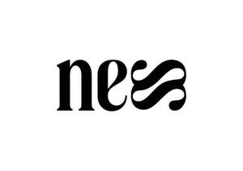

Trade Mark Journal No.2025/049 5 December 2025
UK00004298119 20 November 2025 (5,32,41)

- Class 5
- Collagen for medical purposes; Protein supplements; Vitamin and mineral supplements; Protein powder dietary supplements; Vitamin and mineral preparations; Vitamin and mineral food supplements; Anti-oxidant supplements; Protein dietary supplements; Anti-oxidant food supplements; Dietary supplement drinks; Vitamin supplement patches; Dietary supplements; Vitamin supplements; Nutritional supplements; Dietary supplement drink mixes; Probiotic supplements; Nutritional supplement meal replacement bars for boosting energy; Herbal supplements; Prebiotic supplements; Powdered nutritional supplement drink mix; Dietary and nutritional supplements; Dietary supplements in powder form; Protein supplement shakes; Nutritional supplement energy bars; Mineral dietary supplements; Nutritional supplements consisting primarily of magnesium; Dietary supplements consisting primarily of magnesium; Liquid dietary supplements; Food supplements; Mineral nutritional supplements; Dietary food supplements; Liquid vitamin supplements; Powdered nutritional supplement energy drink mix; Food supplements for dietetic use; Powdered fruit-flavored dietary supplement drink mix; Dietary supplements with a cosmetic effect; Nutritional supplements consisting of fungal extracts; Whey protein dietary supplements; Dietary supplements for humans; Herbal dietary supplements for persons special dietary requirements; Health food supplements made principally of vitamins; Vitamin preparations in the nature of food supplements; Energy gels (dietary supplements); Mineral dietary supplements for humans; Food supplements in liquid form; Food supplements for non-medical purposes; Food supplements for sportsmen; Dietary supplements promoting fitness and endurance; Preparations for supplementing the body with essential vitamins and microelements; Fitness and endurance supplements; Multivitamins; Food supplements consisting of amino acids; Nutritional drink mix for use as a meal replacement; Multi-vitamin preparations; Enzyme dietary supplements.
- Class 32
- Drinking water with vitamins; Mineral water [beverages]; Carbonated non-alcoholic drinks; Non-alcoholic beverages flavored with coffee; Vitamin fortified non-alcoholic beverages; Functional water-based beverages; Vitamin enriched sparkling water [beverages]; Flavored mineral water; Mineral enriched water [beverages]; Water enhanced with minerals; Nutritionally fortified water; Non-alcoholic drinks enriched with vitamins and mineral salts; Sports drinks containing electrolytes; Energy drinks containing caffeine; Beverages containing vitamins; Powders for effervescing beverages; Powders for the preparation of beverages; Powders used in the preparation of fruit-based drinks; Powders used in the preparation of fruit-based beverages.
- Class 41
- Sports and fitness; Organising of sports events and of sports competitions; Provision of entertainment via podcast; Sports and fitness services; Health and fitness training; Exercise and fitness classes; Health club [fitness] services; Fitness club services; Fitness training services; Personal fitness training services; Health and wellness training; Educational services relating to physical fitness; Arranging of workshops and seminars; Arranging and conducting of workshops; Conducting training sessions on physical fitness online; Entertainment services relating to sport; Education, entertainment and sport services; Production of podcasts; Creation [writing] of podcasts; Provision of entertainment via podcasts.
NESS Lifestyle Ltd